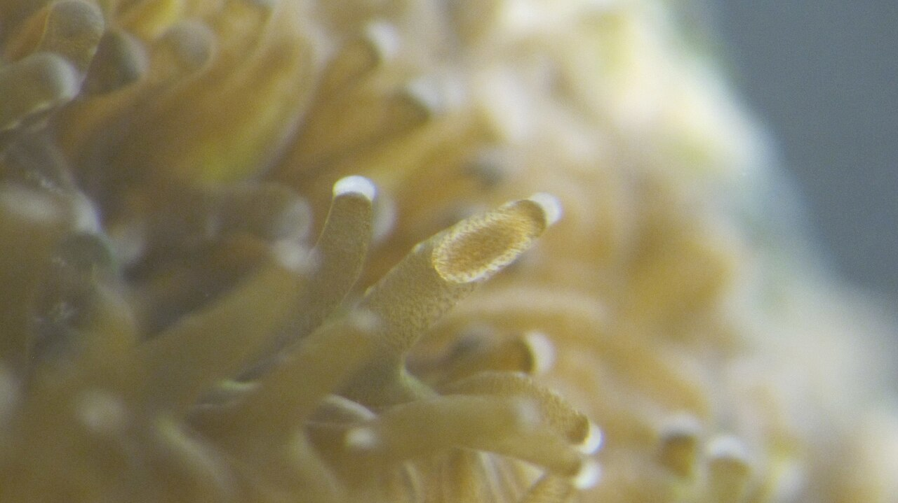

A removable mineral tile with the surface texture, refuge, and tracking needed to learn whether more larvae make it through the first difficult months.
material / mineralscale / millimetresexit plan / retrieval
tagged settlement tile
mineral bodyridges + local cuesjuvenile refugesurvey + retrievesurface sketch / no field evidence
two working scales
Larva-sized texture. Diver-sized logistics.
The idea stretches from coral larvae and tiny settlement cues to field equipment that has to be tagged, inspected, and removed when it stops helping.

the settlement problem starts tinyBrooded Leptastrea purpurea larvae inside coral tentacles. It is a useful reminder that the surface details in this idea have to work at a biological scale.
Narrissa Spies · source · CC BY-SA 4.0what monitored restoration looks likeA coral nursery in Florida Keys National Marine Sanctuary. My scaffold would need the same kind of tagging, retrieval, and follow-up discipline.
Mitchell Tartt/NOAA · source · public domain
scope line
One small recruitment tool - not a cure for reef decline
Scaffold geometry may improve the first hours and months after settlement. It cannot stop ocean warming, prevent bleaching, repair water quality, or replace genetic diversity and climate action.
what is already known
Substrate, topography, flow, and biological cues affect settlement
Combine those variables in a removable modular unit
The proposal integrates a mineral-compatible material, ridges and refuges, a temporary screened cue layer, and retrieval-aware monitoring.
where it can fail
Species, site, fouling, storms, disease, and scale
A geometry useful for one coral or flow regime may fail elsewhere. Biofilms may drift, algae may dominate, sediment may accumulate, and modules may become unstable.
first comparison
Paired material, flume, nursery, and pilot controls
A candidate must outperform flat and existing restoration controls without harmful leaching, disease association, instability, or reduced surrounding biodiversity.
tile anatomy
Useful to settle on. Easy to account for.
Novelty is not assumed merely because several known restoration ideas are combined. The proposal must demonstrate a measurable benefit over simpler alternatives.
01 · Material
Screen the chemistry before the biology
Candidate calcium-carbonate, aragonite-like ceramic, or reef-safe terracotta formulations would first be compared for pH effects, leaching, dissolution, abrasion, roughness, and manufacturing repeatability (NOAA, n.d.).
02 · Settlement interface
Use texture to alter near-surface contact
Ridges, grooves, pores, and sheltered edges are proposed to influence boundary-layer flow and provide attachment locations. Their effect must be compared against flat material under realistic oscillatory flow (Levenstein et al., 2022; Gysbers et al., 2024).
03 · Biological conditioning
Treat cues as a controlled variable
Locally appropriate, pathogen-screened crustose coralline algae-associated cues or biofilms could be tested against untreated controls. They are not assumed to remain beneficial or stable (Ritson-Williams et al., 2009; Peixoto et al., 2017).
04 · Monitoring and retrieval
Make every pilot auditable and reversible
Tagged modules, diver surveys, photogrammetry, survival scoring, storm checks, and predefined retrieval triggers would prevent a failed prototype from becoming permanent debris (NOAA, n.d.; Zhong et al., 2025).
field scorecard
If a flat tile works as well, use the flat tile
These thresholds are proposed for early design screening. They are not observed outcomes and must be adapted to the selected species, site, and permitting framework.
Measure
Minimum signal for continued development
Stop or redesign condition
Material compatibility
No biologically meaningful pH shift or harmful leachate effect relative to a validated restoration-material control.
Acute toxicity, unstable dissolution, sharp fragmentation, or persistent harmful residue.
Larval settlement
At least twice the settlement density of a flat same-material control in blinded replicated trials.
No repeatable improvement, or improvement appears only under one artificial flow condition.
Early survival
At least 25% higher juvenile survival than the flat control at the pre-registered nursery endpoint.
Settlement increases but subsequent survival, growth, or tissue condition declines.
Fouling and sediment
Available settlement area remains equal to or greater than the best existing control through the pilot interval.
Geometry traps sediment, accelerates algal dominance, or blocks water exchange.
Ecological safety
No increase in disease signs, harmful microbial profiles, or injury to adjacent reef organisms.
Disease association, invasive colonization, or measurable harm appears.
Physical stability
No displacement or fracture in site-calibrated surge tests; every unit remains retrievable.
Module movement, entanglement risk, destructive anchoring, or failed retrieval.
retrieval triggers
Nothing stays on the reef just because it looked promising
Site choice and environmental permission come before field deployment. Every control has an associated removal or redesign trigger.
Material
No untested coatings or polymers
Require seawater stability, abrasion, dissolution, and ecotoxicity screening before larval trials.
Biology
Local, screened, temporary cues
Use species- and site-appropriate conditioning; reject modules with harmful or non-local microbial drift.
Diversity
Avoid monoculture restoration
Use genetically diverse cohorts and quarantine-style health screening rather than scaling one convenient genotype.
Climate boundary
Do not overstate the intervention
Settlement support is not protection against heat waves and must not substitute for water-quality or climate action.
deployment ladder
From one wet coupon to a tagged field pilot
Each phase compares against a flat same-material control and an appropriate existing restoration method.
Material screening
Test pH, leaching, dissolution, abrasion, roughness, breakage, and ecotoxicity before introducing coral.
Flume and topography
Compare flat, ridged, grooved, porous, and refuge geometries under site-relevant oscillatory flow and sediment.
Settlement cue trial
Run untreated, locally conditioned, and cue-treated surfaces with blinded settlement and metamorphosis scoring.
Nursery survival
Track juvenile survival, growth, tissue condition, fouling, sediment, and microbial change through a fixed endpoint.
Permitted pilot
Deploy a small number of tagged, retrievable modules at a degraded site with matched controls.
Ecological review
Scale only after multi-season evidence of survival benefit, physical stability, retrieval, and no measurable local harm.
reading log
Sources behind the tile
I label preprints. These papers support separate mechanisms and monitoring methods; none of them proves that my full Coral-Suture idea works.
NOAA. “Restoring Coral Reefs.” National Oceanic and Atmospheric Administration. Source
Levenstein, M. A. et al. “Millimeter-scale topography enables coral larval settlement in wave-driven oscillatory flow.” Preprint, 2022. Preprint
Gysbers, D., Levenstein, M. A., & Juarez, G. “The effect of surface topography on benthic boundary layer flow.” Preprint, 2024. Preprint
Ritson-Williams, R. et al. “New perspectives on ecological mechanisms affecting coral recruitment on reefs.” Smithsonian Contributions to the Marine Sciences, 2009. DOI
Peixoto, R. S. et al. “Beneficial Microorganisms for Corals: A Proposed Mechanism for Coral Health and Resilience.” Frontiers in Microbiology, 2017. DOI
Zhong, J. et al. “Cutting-edge 3D reconstruction solutions for underwater coral reef images.” Preprint, 2025. Preprint
visual note: the mechanism diagram is my own HTML/CSS sketch. the two photos are real reference images; full credits and licenses are listed above and in IMAGE_CREDITS.md.